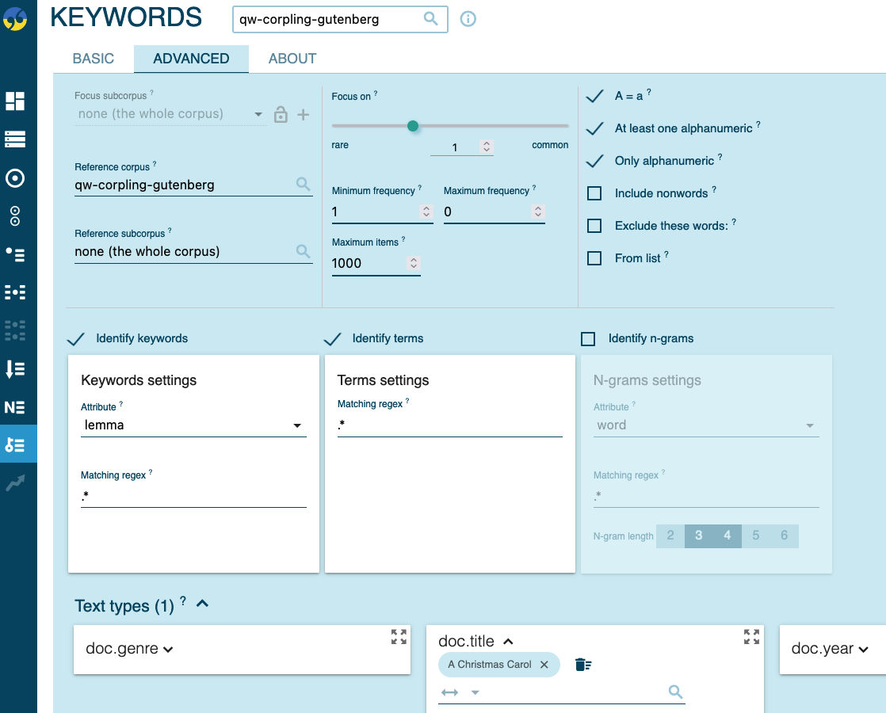

Corpus linguistics
Methods in linguistics
June 18, 2025
Searching Corpora with CQL
Queries are run from the Concordance view using the Corpus Query Language (CQL).
- Tokens are enclosed in square brackets:
[attribute="value"]. - Example:
[lemma="walk"]finds walk, walks, walked, walking.
Common Attributes
word: exact word formlemma: dictionary formtag: part-of-speech tag (word class)
Operators and Wildcards
[]: any single token.|: OR operator (e.g.,[lemma="dog|cat"]).&: AND operator (e.g.,[word="test" & tag="N.*"])..(dot): any single character.+: one or more occurrences.*: zero or more occurrences..*: any sequence of characters (e.g.,[word="pre.*"]matches prefix, prepare).
Example Query
[lemma="go"][word="to"][tag="N.*"] finds go to school, went to London, going to university.
Corpus-Linguistic Analyses in Sketch Engine
Concordances

Frequency Analysis

Collocations

Word Sketches
Word Sketches are one-page, automatic summaries of a word’s grammatical and collocational behaviour.

Practice
Searching Corpora
In the BNC 2014 Spoken, find all instances of:
- The word run.
- The noun run.
- The verb RUN.
- All verbs ending in -ize (e.g., realize, maximize).
- The noun RUN preceded by an adjective.
- Question tags (e.g., isn’t it?, are you?).
- The construction been V-ing (e.g., he been eating).
| Task | CQL |
|---|---|
| 1. the word run | [word="run"] |
| 2. the noun run | [word="run" & tag="N.*"] |
| 3. the verb RUN | [lemma="run" & tag="V.*"] |
| 4. all verbs ending in -ize (e.g., realize, maximize) | [lemma=".*ize" & tag="V.*"] |
| 5. the noun RUN preceded by an adjective | [tag="J.*"] [lemma="run" & tag="N.*"] |
| 6. question tags (e.g., isn’t it?, are you?) | [lemma="be|do|have"] [word="n't"]? [tag="PP.?"] [word="\?"] |
| 7. the construction been V-ing (e.g., he been eating) | [lemma!="have"] [lemma!="have|not"] [word="been"] [tag="V.*" & word=".*ing"] within <u/> |
Analysing Data
In the BNC 2014 Spoken:
- How frequent are going to vs. gonna as in I’m [gonna | going to] go?
- What are the most frequent verbs that complement gonna?
- Which age group uses gonna the most? (Use the
Agerangetext type variable). - Compare the meaning and function of gay over time using Word Sketches in the EEBO and English Trends corpora.
Creating a corpus
Theory
Principles of building corpora (Knight, 2022)
- The contents of a corpus should be selected without regard to the language they contain, but according to their communicative function in the community in which they arise.
- Corpus builders should strive to make their corpus as representative as possible of the language from which it is chosen.
- Only those components of corpora which have been designed to be independently contrastive should be contrasted.
- Criteria for determining the structure of a corpus should be small in number, clearly separate from each other and efficient as a group in delineating a corpus that is representative of the language or variety under examination.
- Any information about a text other than the alphanumeric string of its words and punctuation should be stored separately from the plain text and merged when required in applications.
- Samples of language for a corpus should, wherever possible, consist of entire documents or transcriptions of complete speech events, or should get as close to this target as possible. This means that samples will differ substantially in size.
- The design and composition of a corpus should be documented fully with information about the contents and arguments in justification of the decisions taken.
- The corpus builder should retain as target notions representativeness and balance. While these are not precisely definable and attainable goals, they must be used to guide the design of a corpus and the selection of its components.
- Any control of subject matter in a corpus should be imposed by the use of external, not internal, criteria.
- A corpus should aim for homogeneity in its components while maintaining adequate coverage, and rogue texts should be avoided.
Creating specialised corpora (Koester, 2022)
A specialised corpus is often defined by:
- Specific purpose for compilation, e.g. to investigate a particular grammatical or lexical item;
- Contextualisation: particular setting, participants and communicative purpose;
- Genre, e.g. promotional (grant proposals, sales letters);
- Type of text/discourse, e.g. biology textbooks, casual conversation;
- Subject matter/topic, e.g. economics;
- Variety of English, e.g. Learner English.
Practice: Using Sketch Engine
3 Options:
- from documents (Project Gutenberg)
- from the web
- from YouTube
From documents: Gutenberg Project corpus
Example sources
Charles Dickens
- Novels
- Great Expectations (1861)
- Oliver Twist (1838)
- Short Stories
- A Christmas Carol (1843)
- The Chimes (1844)
Mark Twain
- Novels
- The Adventures of Tom Sawyer (1876)
- Adventures of Huckleberry Finn (1884)
- Short Stories
- The Man That Corrupted Hadleyburg (1899)
- The Facts Concerning the Recent Carnival of Crime in Connecticut (1876)
Download books from Gutenberg Project
Go to https://www.gutenberg.org/ebooks/.


File organisation:
- Create a new folder and put all the files there.
- Use descriptive file names: e.g.
1860_dickens_great-expectations.txt.
Create corpus in Sketch Engine
- Initialise corpus

- Upload files
- Edit metadata

Note that you can and should use bulk editing.

→ Compile your corpus
Corpus information
Overview

Text type distributions

Keyword analysis

Sharing corpora
- This example corpus is shared with all LMU users.
- You should find it under its name
qw-corpling-gutenberg. - You should be able to add files and edit metadata.
From the web
For detailed instructions, see the Sketch Engine documentation.
Web scraping settings
- “As a rule of thumb, do not worry about the advanced settings and use the default settings. Only if the results do not produce the desired results, start looking into the advanced settings.”
- “Please note that you can use multiwords such as
"kick the bucket"using the quotes, and also proper names of different kinds.” - Denylist: “Denylist keywords can also be used to reduce ambiguity (e.g. you might use”politics” when collecting a corpus on the environment using “party”). It is only necessary to use the denylist and allowlist if you irrelevant documents are found, otherwise it is not necessary.”
- Searching for specific varieties: “Limit the search to only UK domains or the domains of Portugal. Type .uk (.pt) into the site list in the advanced options.”
- Making your corpus bigger: “You can repeat the same procedure several times to enlarge the corpus. Sketch Engine will make sure no page is included twice.”
Process
- Initialise the corpus
Use a name prefix, e.g., qw.
- Find texts on the web

- Specify input criteria
For example, using keywords like the a and of you i can help create a neutral corpus.

4. Compile corpus
- Check corpus information
Overview:

Text type distributions:

- Check keywords
From YouTube
Example file: https://www.youtube.com/watch?v=E3U6MsdBalg
Convert and download YouTube video as audio file (e.g.
mp3) using a tool like Open Video Downloader.Transcribe audio file using a tool like Whisper (e.g., via HuggingFace or MacWhisper).
Create corpus by uploading your
txtfile(s).Browse and analyse your transcripts.